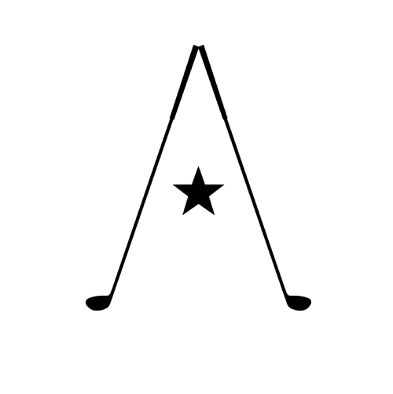

Austin Golf Club is a privately owned Golf Club operating as a 501(c)(7) non-profit organization. Exclusively enjoyed by members and their guests, the property features 18 holes seamlessly built into a piece of oak-filled, Texas wilderness 30 miles northwest of downtown Austin. Designed by Coore & Crenshaw in 2001, the Club finds its strength in its simplicity.